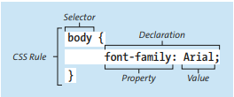
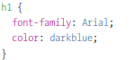

O capítulo explica que o CSS permite transformar documentos HTML simples em páginas atraentes, definindo cores, fontes, layouts e decorações. O conteúdo detalha o funcionamento das regras CSS, que consistem em um seletor (para identificar o elemento) e uma declaração (composta por propriedade e valor).
Os principais tópicos discutidos incluem:
O funcionamento fundamental das Folhas de Estilo em Cascata (CSS) baseia-se na aplicação de regras específicas que determinam como os elementos de um documento HTML devem ser visualizados no frontend. De acordo com o princípio básico da linguagem, uma regra CSS é estruturalmente composta por dois elementos principais: o seletor e o bloco de declaração. O seletor exerce a função primordial de identificar e apontar para o elemento ou conjunto de elementos que receberão a estilização, funcionando como o alvo da instrução.

Por sua vez, o bloco de declaração, que é invariavelmente delimitado por chaves, contém as diretrizes que definem as alterações estéticas. Cada declaração individual dentro deste bloco é formada por um par composto por uma propriedade e um valor, separados por dois-pontos. Enquanto a propriedade indica qual aspecto visual será modificado — como a cor, o tipo de fonte ou o espaçamento —, o valor estabelece a configuração exata que deve ser aplicada. O encerramento de cada declaração é marcado por um ponto e vírgula, permitindo que múltiplas instruções sejam agrupadas para um mesmo seletor. Dessa forma, o CSS opera transformando a estrutura bruta do HTML em uma interface visualmente organizada e atraente por meio dessa sintaxe padronizada.

A inclusão de regras CSS em documentos HTML pode ser realizada através de três métodos distintos, cada um com implicações específicas para a organização e manutenção do projeto de software. A escolha da técnica mais adequada depende da necessidade de reutilização do código e da escala da aplicação web. O método mais recomendado pela literatura técnica é o uso de Folhas de Estilo Externas (External CSS). Nesta abordagem, as instruções de estilo são armazenadas em ficheiros de texto independentes com a extensão .css, que são posteriormente ligados ao documento HTML através do elemento inserido na secção
. Esta técnica promove uma separação clara entre a estrutura (HTML) e a apresentação (CSS), permitindo que um único ficheiro de estilos seja partilhado por múltiplos documentos HTML. Consequentemente, assegura-se a consistência visual de um projeto inteiro e facilita-se a manutenção, uma vez que alterações centrais no ficheiro CSS propagam-se automaticamente para todas as páginas vinculadas. Alternativamente, existem as Folhas de Estilo Internas (Internal CSS), cujas regras são definidas diretamente no cabeçalho do documento HTML, dentro do elemento